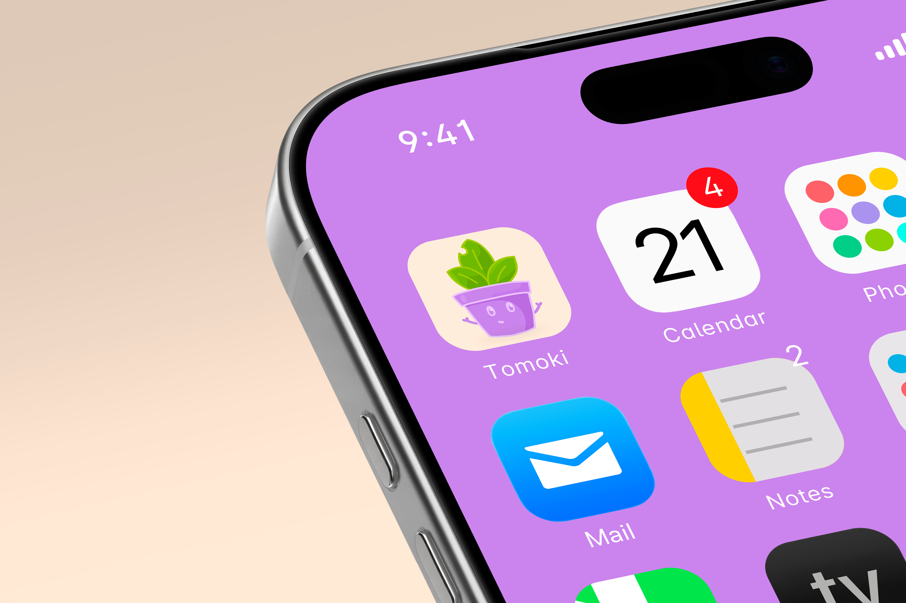
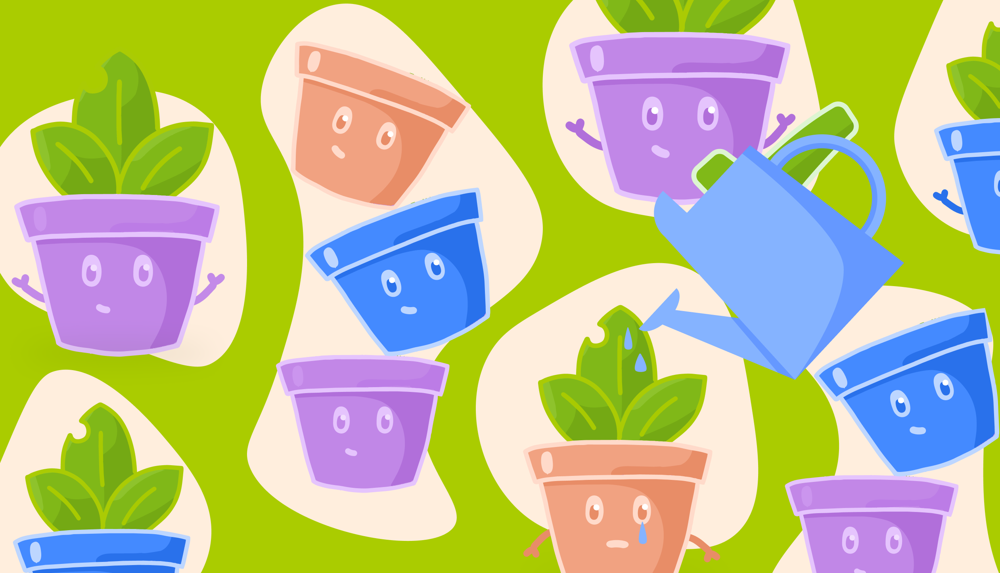
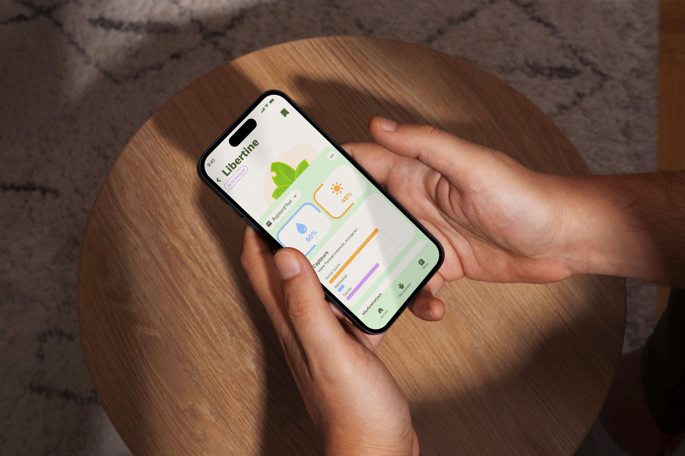
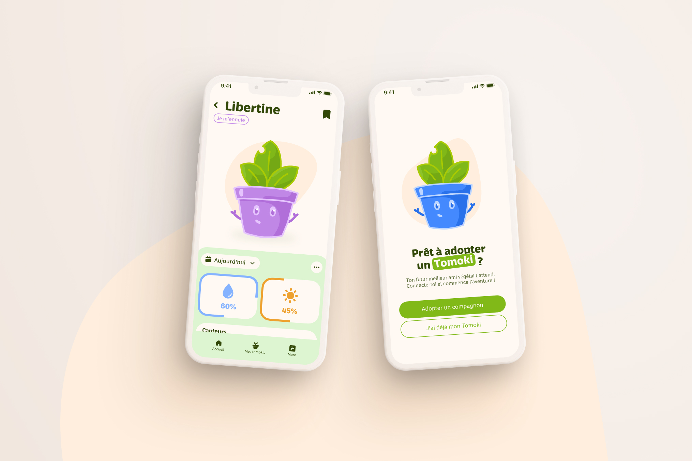
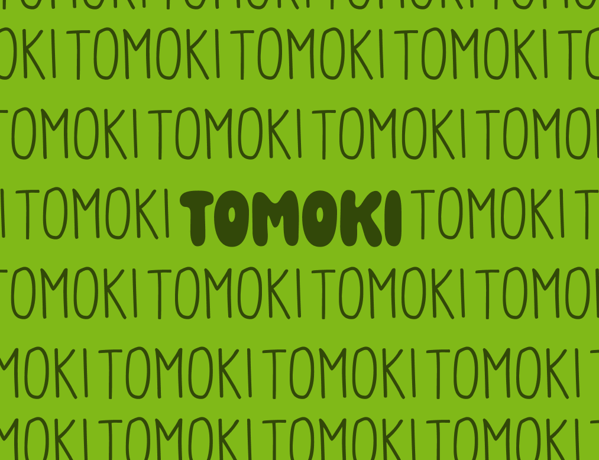

- Branding
- UI / UX
- Application Mobile
Réalisé en collaboration lors de la Semaine CréativeLab, ce projet visait à résoudre une problématique commune : l'échec récurrent de l'entretien des plantes chez les jeunes. En trois jours intenses, nous avons développé un écosystème complet passant d'un concept abstrait à un prototype d'application fonctionnel. L'enjeu était d'humaniser la technologie pour qu'elle ne soit plus perçue comme un simple outil de mesure, mais comme un être vivant avec de l'empathie. Comment utiliser des capteurs pour traduire les besoins vitaux d'un végétal en "émotions" compréhensibles et attachantes ?.



La mission
L'objectif était de concevoir une solution bienveillante pour les 18-35 ans qui aiment la nature mais n'ont pas forcément la "main verte". Ma mission a consisté à structurer l'expérience utilisateur et l'interface mobile pour garantir une navigation intuitive, principalement axée sur l'usage au pouce. Il s'agissait de transformer des données techniques (humidité, luminosité) en un langage visuel simple et "Kawaii". En intégrant des mécaniques de gamification et une identité visuelle chaleureuse, nous avons cherché à encourager l'utilisateur à prendre soin de son Tomoki par pure affection, plutôt que par simple obligation.

